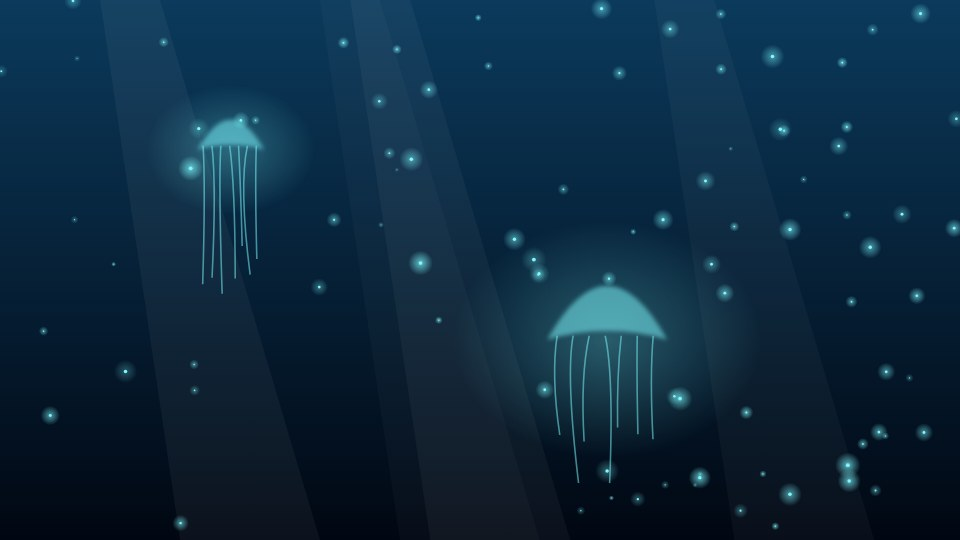

How deep-sea animals make their own light
Three out of four animals in the open ocean can produce light. Bioluminescence is the most common form of communication on the planet, and most of it happens where no sunlight reaches.

Luciferin and luciferase
Bioluminescence is a chemical reaction. A light-emitting molecule called luciferin is oxidised with the help of an enzyme, luciferase, and the energy is released as a photon. Most deep-sea light is blue-green, around 470 nanometres, because those wavelengths travel furthest through seawater.
Coelenterazine, the most widespread luciferin in the ocean, is shared by jellyfish, copepods, shrimp and squid. Many animals cannot make it themselves and get it from their diet.
Photophores and counterillumination
Photophores are light organs, sometimes with lenses, reflectors and colour filters. In the twilight zone, between 200 and 1,000 metres, many fish and squid line their bellies with photophores and match the faint light from above. This counterillumination erases their silhouette for predators looking up.
The firefly squid and the hatchetfish adjust the brightness of their photophores within seconds as clouds pass overhead, hundreds of metres above them.
Lures, alarms and decoys
The anglerfish lure glows because it hosts symbiotic bacteria. Some shrimp spit clouds of glowing fluid to blind a predator, and the deep-sea jellyfish Atolla flashes in rings, a burglar alarm that may call larger predators to attack whatever is attacking it.
Studying light in the dark
Most of what is known comes from remotely operated vehicles and crewed submersibles. White lights scare animals away, so researchers now film with red light and low-light cameras, and use electronic lures that mimic the Atolla alarm.
Milky seas, where plankton light up thousands of square kilometres of surface water, were confirmed by satellites before any research ship could reach one.